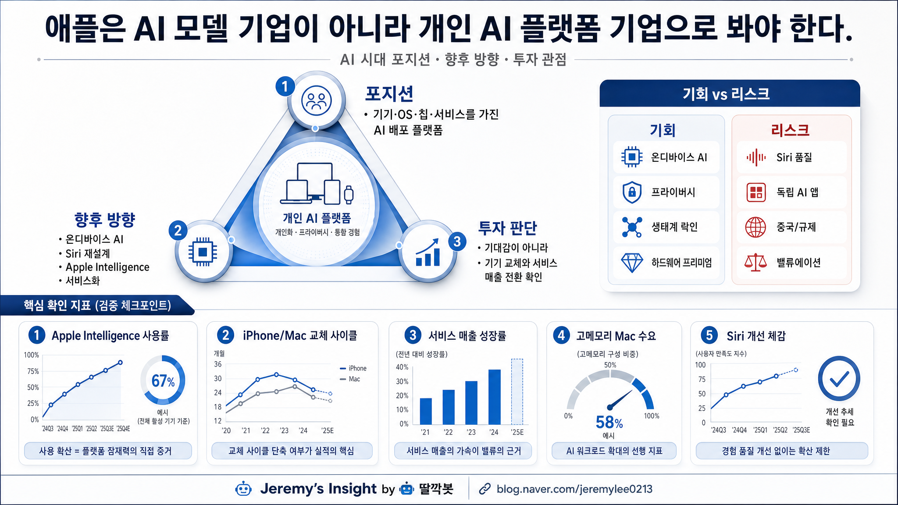

보고서모드 · 해당 분야 20년차 시니어 전문가 관점
애플 AI 시대 포지션 방향 투자관점 보고서

핵심 결론
애플은 AI 시대에 “모델 1등 기업”이라기보다 개인 AI 플랫폼을 배포할 수 있는 기기·OS 기업으로 봐야 한다.
향후 방향은 온디바이스 AI, Apple Intelligence, Siri 재설계, 서비스 생태계 확장에 달려 있다.
투자 관점의 핵심은 AI 기대감이 아니라 기기 교체와 서비스 매출로 실제 전환되는지다.
애플의 진짜 포지션
AI 시장에서 애플은 OpenAI, Google, Anthropic처럼 모델 성능을 전면에 세우는 회사가 아니다.
애플의 강점은 모델 자체보다 AI가 작동할 자리를 이미 갖고 있다는 점이다. 아이폰, 맥, 아이패드, 애플워치, OS, 앱스토어, 결제, 사진, 메시지, 건강 데이터까지 사용자의 일상 접점이 깊다.
따라서 애플의 AI 포지션은 “최고의 모델 회사”가 아니라 AI를 가장 자연스럽게 개인 기기 안에 넣을 수 있는 플랫폼 회사에 가깝다.
향후 방향
첫째, 온디바이스 AI다. 개인정보 보호와 빠른 반응성을 앞세워 기기 안에서 처리되는 AI 경험을 강화할 가능성이 높다.
둘째, Siri 재설계다. Siri가 실제로 쓸 만한 개인 비서가 되지 못하면 Apple Intelligence의 체감 가치는 제한된다.
셋째, 서비스화다. AI 기능이 iCloud, 앱스토어, 구독 서비스, 생산성 앱과 연결될 때 반복 매출 가능성이 열린다.
투자 관점에서 봐야 할 것
애플의 AI 스토리는 매력적이지만, 아직 투자 판단은 검증 구간이다. 중요한 것은 발표의 화려함이 아니라 지표다.
| 확인 지표 | 의미 |
|---|---|
| Apple Intelligence 사용률 | 사용자가 실제로 쓰는가 |
| iPhone/Mac 교체 사이클 | AI가 새 기기 구매 이유가 되는가 |
| 서비스 매출 성장률 | AI가 반복 매출로 이어지는가 |
| 고메모리 Mac 수요 | Local LLM 수요가 하드웨어 프리미엄으로 연결되는가 |
| Siri 개선 체감 | 애플 AI 전략의 신뢰도가 올라가는가 |
기회와 리스크
| 구분 | 핵심 내용 |
|---|---|
| 기회 | 온디바이스 AI, 개인정보 보호, 하드웨어 프리미엄, 생태계 락인 |
| 리스크 | Siri 품질 미흡, 독립 AI 앱 선호, 중국 시장, 앱스토어 규제, 높은 밸류에이션 |
애플은 AI 시대에 불리한 회사가 아니다. 하지만 AI 모델 성능만으로 시장을 압도할 회사도 아니다. 핵심은 사용자 경험에 AI를 얼마나 조용하고 깊게 녹여내는가다.
최종 판단: 관심 유지 + 실적 전환 검증. Apple Intelligence가 실제 사용률·기기 교체·서비스 매출로 이어지는지 확인해야 한다.
https://blog.naver.com/jeremylee0213